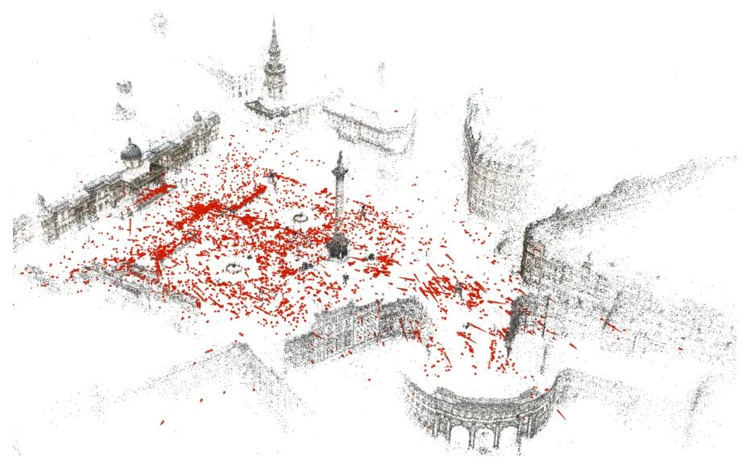
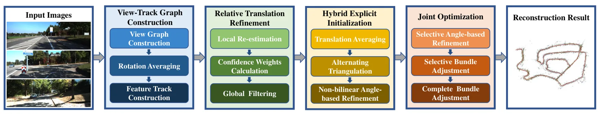
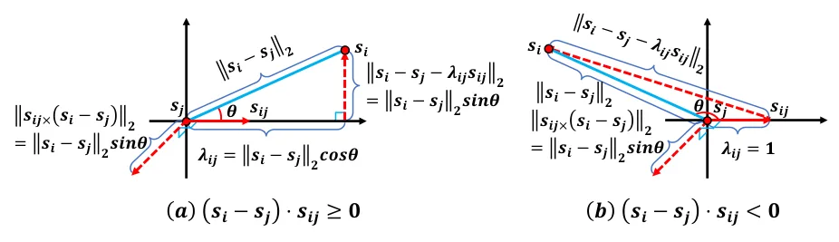

HETA++：采用混合显式平移平均的全局 Structure-from-MotionHETA++: Global Structure-from-Motion with Hybrid Explicit Translation Averaging
今日最直接的经典 SfM 后端工作，针对明确退化与 outlier 问题；代码、完整数值和大规模成本尚待确认。
一句话工作总结
融合相对平移与特征轨迹，以分阶段角度优化和 BA 提升全局 SfM 平移平均的鲁棒性。
摘要
HETA++ 联合 relative translations 与 feature tracks 进行全局 SfM 平移平均，以缓解共线相机运动退化和 track outlier。方法先利用全局旋转细化并剔除不一致相对平移，再用 convex distance objective 初始化相机位置和三维点，以 non-bilinear angle objective 细化。随后用空间均衡选择的 tracks 对旋转和位置进行有界角度细化与重投影 BA，最后使用全部可靠 tracks 完整 BA。实验称在顺序和无序真实数据上兼具准确性、鲁棒性与可扩展性。
Global Structure-from-Motion (SfM) offers advantages over incremental methods in terms of efficiency and error distribution. However, the task of translation averaging remains challenging. Many existing methods rely solely on relative translations or feature tracks, which either degrade under collinear camera motion or are susceptible to outliers. In this paper, we propose a novel hybrid explicit translation averaging framework that incorporates both relative translations and feature tracks. Specifically, we first refine the relative translations using global camera rotations and remove globally inconsistent relative translations. Next, we employ convex distance-based objective functions to estimate the initial camera positions and 3D points, followed by refinement using a non-bilinear angle-based objective function. Furthermore, since camera rotations are fixed during translation averaging, inaccurate camera rotations can severely limit the accuracy of camera positions. To address this issue, we then robustly refine both camera rotations and camera positions with selected feature tracks through bounded angle-based refinement and subsequent reprojection-based bundle adjustment. In this step, feature tracks are selected to maintain a balanced spatial distribution and improve optimization efficiency. Finally, we perform a complete bundle adjustment using all reliable feature tracks to refine the camera parameters and 3D points. Extensive experiments on various sequential and unordered real-world datasets demonstrate the superior accuracy, robustness, and scalability of our approach, outperforming state-of-the-art methods in both accuracy and computational efficiency.
中文解读摘录
- 作者：Peilin Tao, Hainan Cui, Mengqi Rong, Shuhan Shen
- 价值判断：联合 relative translations 与 feature tracks，分别补偿共线相机运动退化和 track outlier 敏感性，是今日最直接的经典几何工作。
- 技术要点：先用全局旋转清洗相对平移，以 convex distance objective 初始化相机与点，再做 non-bilinear angle refinement；最后依次执行有界角度旋转/位置细化、选轨 BA 和完整 BA。
- 后续核查：各阶段消融、超大规模内存与时间、旋转平均误差传播，以及与 COLMAP/global SfM 基线在顺序和无序数据上的完整数值。
- 链接：arXiv · PDF
图表/页面预览
{kind=link}

{kind=link}

{kind=link}
